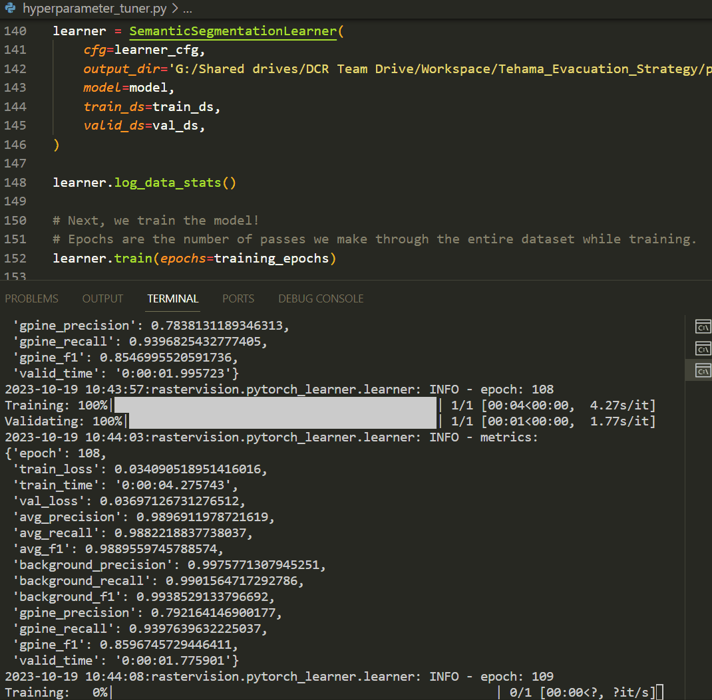
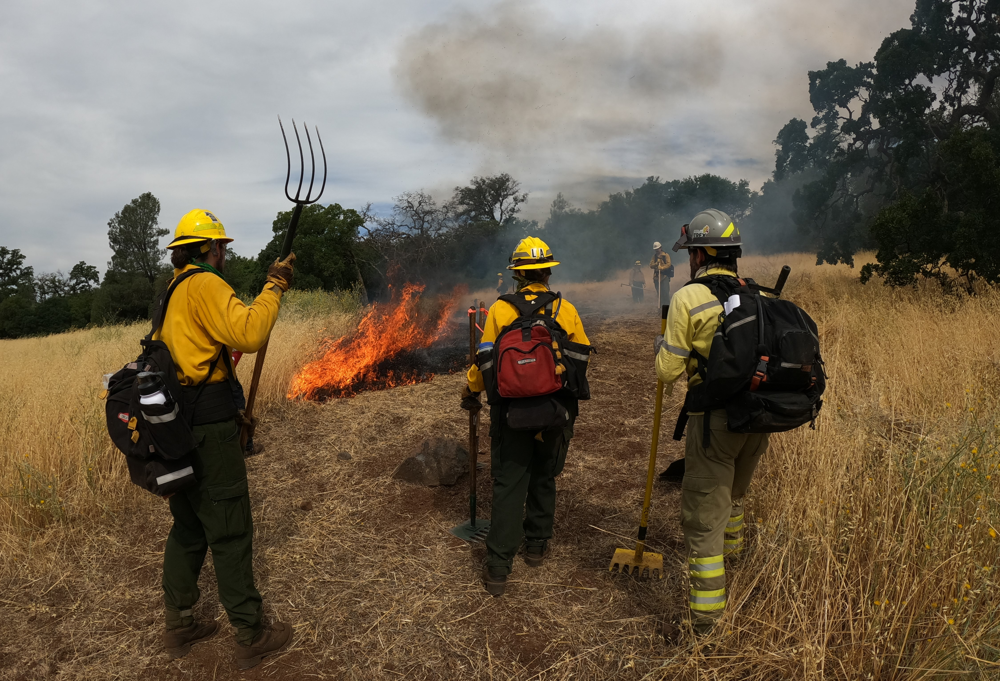
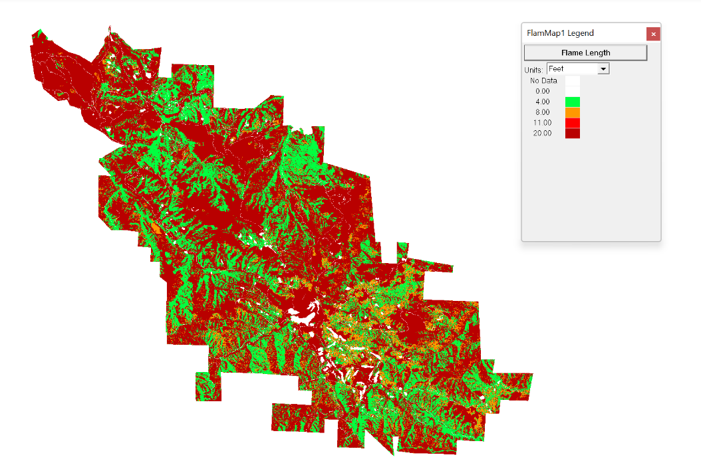
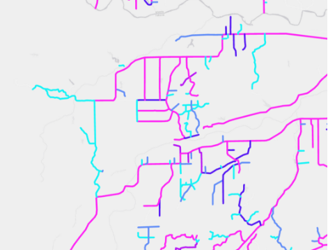
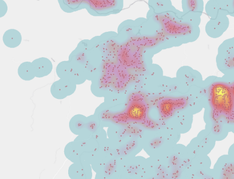

Research Analyst II / Systems Admin at Deer Creek Resources

August 2022 - Present
-
Created computer vision model in Python to map vegetation based on aerial imagery
-
Automated process of creating input rasters for wildfire model (R, LiDAR, FLAMmap)
-
Identified hazardous evacuation routes in Tehama County (GIS and field work)
-
Acquired wildland firefighter certifications and partiipated in prescribed burns
-
Intern during August 2022 - May 2023 and part-time June 2023 - present
Skills: Python, R, QGIS, ArcGIS Pro









Data Engineering Intern at Universal Music Group

June 2022 - August 2022
- Developed script to analyze Google BigQuery storage and proposed solution to generate savings of $120k/year
- UMG has implemented this project throughout 2023.
- Learned SQL and applied skills for analytics on Big Data.
- Developed data pipeline for UK top artists chart under guidance of senior developer.
Skills: Python, SQL, Google Cloud Platform


Above: Two slides from optimization project presentation (see first bullet point above).
Graphs and figures cannot be shown publicly.
Teaching Assistant at Computer Science Department of Pomona College

January 2022 - May 2022
- Taught Python to college students in Intro CS.
- Ran 2 hour weekly mentor sessions, led 3 hour weekly class labs, and graded assignments.
Skills: Python


Above: Lab room where sessions took place [left] and example of coursework code [right].
Tutor at Quantitative Skills Center of Pomona College
January 2022 - May 2022
- Hosted bi-weekly 2 hour drop-in tutor sessions
- Intro CS, Discrete Math and Data Structures (Python, Coq, Java).


Above: Example of coursework I tutored. A proof in COQ [left] and a (poorly) mouse-drawn proof [right].
Research Assistant at Formal Analysis of Interactive Media Lab
January 2022 - May 2022
- Assisted development of application Mappy, a Rust program which interprets pixel data and creates maps of emulated Nintendo NES games.
- Published paper on Mappy to conference AIIDE 2021 (Click here to view the paper!)
- FAIM Site
Skills: Rust

Above: FAIM 2021 lineup.
Sponsored Yoyo Professional


October 2015 - August 2022
- Sponsored by Unparalleled Yoyos (previosly YoYoFactory and Chico Yoyo Co.).
- Designed, prototype and advertise my 5 signature yoyo models:
- Lightspeed
- D10
- ND
- ND Ultra
- Bind
- Damage
- Receive royalties from sales.
- Fully funded travel to competitions in China, Japan, Iceland, and across the US.

Camp Counselor at Bar 717 Ranch
May 2021 - August 2021
- Led groups of 6 campers over 2 week sessions.
- Guided groups through activities such as hikes, guitar lessons, overnight camping trips.
- Acquired lifeguard/CPR and Wilderness First Aid certifications.
Skills: Lifeguarding, Wilderness First Aid


Above: Under the apple trees; Barn Hill on a foggy day.
Student Assistant at Claremont McKenna Children's School

May 2021 - August 2021
- Employed to supervise groups of 20 children (ages 3-4) and foster a positive learning community.